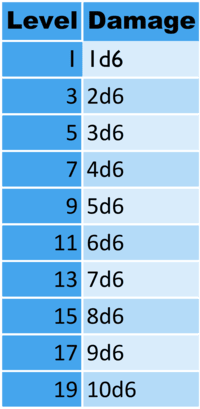

Bounty Hunter
Wielders of cunning and precision, bounty hunters are relentless pursuers of their targets, masters of survival, and deadly combatants in the vast galaxy. Whether driven by credits, a moral code, or sheer vengeance, these hunters blend martial skill, tactical prowess, and unmatched tracking ability to bring their prey to justice—or their end.
Class Features
Hit points
Hit Dice: 1d10
Hit Points at 1st level: 10 + your Constitution modifier
Hit points at Higher Levels: 1d10 (or 6) + your Constitution modifier per Bounty Hunter level after 1st
Proficiencies
Armor: Light and Medium Armor
Weapons: Simple Weapons, Blasters, Vibroweapons
Tools: Vehicles, Traps
Saving throws: Wisdom, Constitution
Skills: Choose 3 skills from: Survival, Perception, Nature, Investigation, Acrobatics, Stealth, History
Equipment
2 Dc-17 blaster pistols or a Dc-15a blaster rifle. A vibrosword, and a basic med kit.
Ability Score Improvments
When you reach 4th level, and again at 8th, 12th, 16th, and 19th level, you can increase one ability score of your choice by 2 or increase 2 ability scores by one. You cannot increase a skill above 20.
Skills
Bounty Strike
Level 1: Hunter's Target
Once per long rest, you can spend one minute selecting one creature as your bounty. You must have a track or something with their scent. You may also have a picture or a hologram of your target.
When you are tracking or in combat with your target you gain the following:
- You have advantage on Nature, Survival, Perception, and Investigation checks if used to find your target.
- You gain a bonus to your attack and damage rolls against your target equal to your Wisdom modifier
Level 1: Bounty Strike
When you hit your bounty, you deal additional damage based on your level. See the chart for additional damage values.
Level 3: Hunter's Order
You chose which order of bounty hunters you wish to join. You may choose from marksman, executioner, and deliverer. You gain features under this archetype at levels 3, 7 and 18.
Level 5: Extra Attack
When you take the attack action, you may make one additional attack.
Level 10: Improved Hunter's Target
You may now select 2 targets when you use Hunter's Target
Level 11: Hindering Strikes
Once per turn, when you hit your target, its speed is reduced by 10, and all force or magic transportation have a 50 percent chance of failure (roll 11 or higher on d20).
Level 14: Knockout Blow
Once per turn, you can choose to deal double damage to your target, but if you do so and its hp reaches 0, it is knocked unconscious instead of dying. You can use this ability 3 times per long rest.
Level 17: Focused Hunting
Your target is your only focus. While you can see your target, you have disadvantage on attack rolls against opponents who are not your target, but advantage against your target, and opponents you are not your target have disadvantage on attack rolls against you.
Level 20: Ultimate Hunter
- You gain expertise in Survival, Perception, and Investigation
- You have advantage on opportunity attacks against your target
- When you use hindering strike, your targets speed is reduced by 20, and all other transportation attempts fail
Order of the Marksman
Level 3: Sharpshooter
You gain a +2 bonus to attack and damage rolls with ranged weapons.
Level 7: Long Range Shots
The range for blasters you are proficient in is doubled.
Level 18: Master Marksman
Your ranged attacks ignore half and 3 quarters cover. You gain full cover if behind 3 quarters cover.
Order of the Executioner
Level 3: Assassin
You gain a +3 bonus on all damage rolls.
Level 7: Improved Strikes
You get a critical hit on a 19 or 20.
Level 18: Master Executioner
When you hit an opponent with an attack, you can make an additional attack as a bonus action.
Order of the Deliverer
Level 3: Improved Grapple
Any opponent has disadvantage on strength checks to escape grapples
Level 7: Grappling Strike
While you have someone in a grapple, you can use an action to force your target to make a constitution save. On a successful save, their hp is reduced by your current level. On a failed save, their hp is reduced by 3 times your current level.
Level 18: Master Deliverer
A grappled target has disadvantage on constitution saves and takes double damage from suffocation.